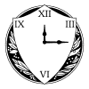

Programs and Operations

The Mission of the FTAA
The mission of the Federal Temporal Anomaly Authority is defined in the FTAA
Authorization Act of 1967 as follows:
The Federal Temporal Anomaly Authority studies, monitors, and assists in
intervention within temporal eras beyond the present to protect and defend the
interests of the American people. The FTAA cooperates with partners to develop
understanding of other eras and extend the influence of the current temporal
era throughout the timeline.
Major Events in the History of the FTAA
- 1967 - Congress authorizes the FTAA to be formed in a multi-agency
cooperating agreement between National Bureau of Standards (now NIST), the
Federal Bureau of Investigation, Department of Defense, and the Lawrence Radiation
Laboratory (now Lawrence Livermore National Laboratory). The first FTAA offices
are established on the campus of the Lawrence Radiation Laboratory in California.
- 1971 - National Bureau of Standards establishes an East Coast research
hub on their Gaithersburg, MD campus. President Richard M. Nixon attends the
groundbreaking of the main research facility building. This facility eventually
becomes known as the National Chronographic Laboratory and Research Center (CLARC).
- 1983 - In partnership with Department of Defense, the National Bureau
of Standards moves the CLARC from the Gaithersburg campus to the U.S. Army
installation at Fort Ritchie, Maryland. This provides additional resources and
access for historians and scientists employed by the FTAA.
- 1988 - President Ronald Reagan further tasks FTAA (in cooperation with
partner organizations) with monitoring research and development of temporal
technologies by international actors, as well as controlling the import and
export of materials from alternate temporal eras. This strengthening of the
mission supports protecting and defending temporal stability and American
interests.
- 1992 - Rogue reverse temporal incursion event in Mid-Atlantic region
creates greater awareness of the FTAA's work and leads to major alterations in
FTAA operating policies and proceedures. The Office of Public Communication opens
new office and visitor center in Emmitsburg, MD to help educate the public on
the work of the FTAA.

Mission | Programs and Operations | Employee Data Storage | Index
Need help? Have a temporal policy question? Email us at ftaaweb@stjc.edu or by phone at (202) 738-9235.
Last Updated: November 17, 1993
This site is best viewed using the NCSA Mosaic WWW browser.